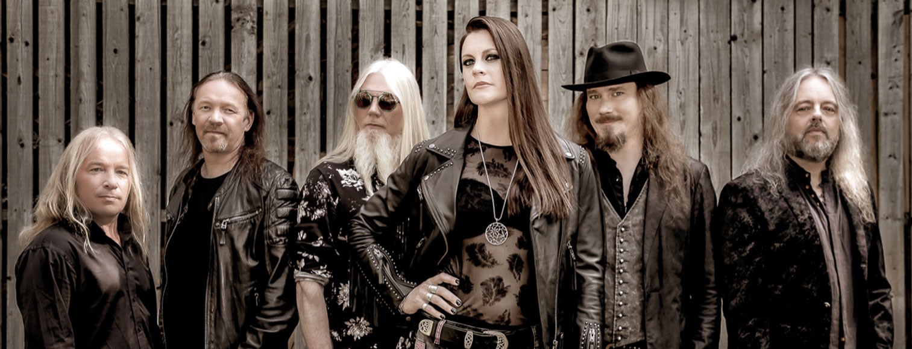

Nightwish
Nightwish is a symphonic metal band from Kitee, Finland. The band was formed in 1996 by lead songwriter and keyboardist Tuomas Holopainen, guitarist Emppu Vuorinen, and former lead singer Tarja Turunen. The band soon picked up drummer Jukka Nevalainen, and then bassist Sami Vänskä after the release of their debut album, Angels Fall First (1997). In 2001, Vänskä was replaced by Marco Hietala, who also took over the male vocalist role previously filled by Holopainen or guest singers.
Although Nightwish have been prominent in their home country since Angels Fall First, they did not achieve wider success until the release of the albums Oceanborn (1998), Wishmaster (2000) and Century Child (2002). Their 2004 album, Once, has sold more than one million copies and was the band's breakthrough in the United States. Their biggest US hit single, "Wish I Had an Angel" (2004), received MTV airplay and was included on three US film soundtracks to promote their North American tour. The band produced three more singles and two music videos for Once, as well as a re-recording of "Sleeping Sun" for the compilation album, Highest Hopes: The Best of Nightwish (2005), before Turunen's dismissal in October 2005. Her last performance with Nightwish was during a concert recorded for the live album/DVD End of an Era. After the concert, the other members informed Turunen with an open letter that she was no longer a member of Nightwish.
In May 2007, Nightwish announced Anette Olzon as Turunen's replacement. That September, the band released their sixth album, Dark Passion Play, which has sold almost 2 million copies. The album's lead single, "Amaranth", became one of Nightwish's most successful in Europe. The supporting tour, one of the band's largest, started on October 6, 2007 and ended on September 19, 2009. The band released an EP/live album, Made in Hong Kong (And in Various Other Places), in March 2009 as a CD/DVD, and their seventh studio album, Imaginaerum, was released globally on various days in late 2011/early 2012.
On October 1, 2012, Nightwish announced that they had parted ways with Olzon and would be finishing the tour with at that time ReVamp vocalist (ex-After Forever) Floor Jansen. In October 2013, Nightwish made Jansen and longtime session uilleann pipes player Troy Donockley permanent members of the band, and they were featured in the acclaimed album Endless Forms Most Beautiful, released on March 27, 2015.
Nightwish is the third-best-selling band and musical entity in Finland with certified sales of nearly 900,000 certified copies. The group is also the most successful Finnish band worldwide, selling more than 9 million records and receiving more than 60 gold and platinum awards, having released five Number 1 albums and thirteen Number 1 singles. On October 26, 2018, Nightwish was inducted into the Finnish Music Hall of Fame, becoming the honorary gallery's 11th member.
